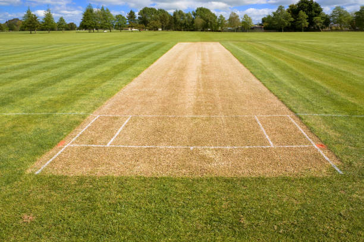
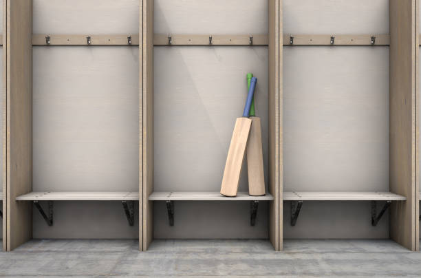
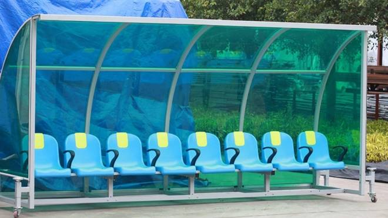

Our World-Class Facilities
Experience premium cricket amenities for players and spectators
Main Cricket Ground
Our centerpiece is a professionally maintained cricket pitch meeting international standards, with perfect turf and lighting for day/night matches.
- International-standard pitch
- Floodlights for night matches
- Premium outfield grass

Practice Facilities
Six dedicated practice nets with both turf and artificial surfaces, plus bowling machines for focused training sessions.
- 4 turf practice nets
- 2 artificial nets
- Bowling machines available

Additional Amenities
Changing Rooms
Spacious, clean changing facilities with showers and lockers

Pavilion Cafe
Serving hot meals, snacks and beverages

Ample Parking
200+ spaces with dedicated team parking